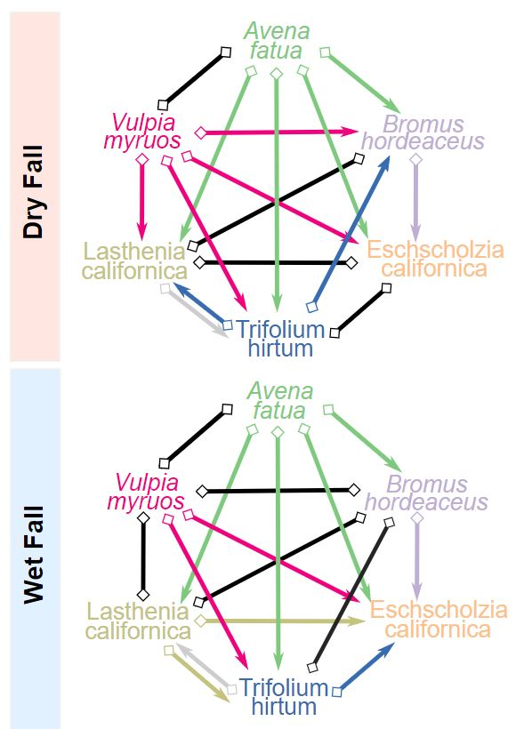

Partitioning the drivers of competition and coexistence in California grasslands
Two things are true about grasslands in California: 1) their native species and habitats have largely been replaced by non-native invasives dating back to the westward expansion of European colonists, and 2) they're highly variable ecosystems, particularly in terms of rainfall. These invasive species are presumably competetively dominant over their native analogues, but its less clear to what extent rainfall variability can offset these fitness differences. Using Modern Coexistence Theory, I am partitioning the mechanisms mediating competition and coexistence (or lackthereof) between native and non-native species in California grasslands.
Patterns of herbivory and defense in the tropics
Pests and pathogens exert significant pressure on plant communities, particularly in tropical forests. They are implicated in both the generation of new species via attack-defense mediated evolutionary feedbacks, and in the maintenance of existing species by driving negative density dependence. I studied how populations of seedlings varied in their vulnerability to herbivory across the Panamanian isthmus, finding evidence for local adaptation to herbivores at distances < 30 kilometers, implying that these eco-evolutionary feedbanks are both strong and finely resolved in the tropics.

Plasticity in vulnerability to drought
Water or the lack thereof is one of the most fundamental environmental challenges plants must contend with. Their ability to resist water stress is generally adaptive to their specific growing environment, reflecting historically means. However, climate-change mediated shifts in temperature and precipitation regimes mean that plants in many regions across the globe are now experiencing novel conditions. I examined the ecophysiology of Red and Norway Maple drought tolerance in US Northeastern forest, and found significant plasticity in responses to drought as seedlings, implying understory resilience to future climates. I also found that Norway Maple was exceptionally resistant to drought, challenging the notion that invasive species are necessarily resource-aquisitive.

The coexistence of leaf habits in tropical forests
Drought-deciduousness is a common adaptation to dry conditions across the tropics, where trees will drop their leaves at the onset of the dry season to fuse their hydraulic pathways and avoid drought stress. Similarly, in the wetter tropics evergreen trees are very common, presumably to take advantage of ample year-round precipitation. However, many tropical forests are mixed-deciduous (coxistence of both deciduous and evergreen leaf habits). I used applied coexistence theory to quantify and assess the relative importance of water partitioning vs temporal rainfall variability for the coexistence of these two convergent adaptations.